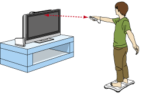

|
3
|
Preparación del control
|

|


Nota: Si el cierre de tu correa tiene un seguro, bájalo hasta que oigas un clic. Así evitarás que se suelte la correa.

Asegúrate de tener espacio suficiente entre tú y otros objetos o personas durante el juego. Nintendo recomienda por lo menos 3 pies (1 metro).
• La Wii Balance Board está diseñada para personas que pesen 330 libras (150 kg) como máximo.
Este procedimiento te permitirá establecer la comunicación entre el control y la consola Wii.
El Wii Remote incluido con esta consola Wii ya ha sido sincronizado con la misma.
Existen dos métodos para sincronizar un control con la consola Wii.
MODO NORMAL: El modo normal de sincronización se utiliza para conectar controles adicionales a la consola Wii o para volver a sincronizar el control incluido con la consola Wii. Una vez sincronizado, el control permanecerá conectado a la consola Wii a menos que sobrescribas dicho ajuste al sincronizar el control con otra consola Wii diferente.
MODO ÚNICO: Este modo te permitirá usar el Wii Remote temporalmente con la consola Wii de un amigo, y que tus amigos puedan usar sus controles con tu consola Wii. No sobrescribirá el ajuste del modo normal guardado en el Wii Remote. En este modo, el control solo se comunicará con la nueva consola Wii mientras esté encendida. Al apagarla, el control dejará de estar sincronizado con la consola Wii.
Nota: Solo un Wii Remote sincronizado en el modo normal puede encender o apagar la consola Wii.
Sincronización en modo normal
Nota: Asegúrate de que el Wii Remote tiene pilas.
Cuando se haya establecido la conexión, el indicador que señala el número del jugador permanecerá encendido. Debes seguir este procedimiento con cada Wii Remote adicional que conectes a la consola Wii.
Nota: La frecuencia de parpadeo de los indicadores de jugador cambiará dependiendo del nivel de carga de las pilas.
Sincronización en el modo único
Nota: Este modo desactiva de forma temporal el ajuste de sincronización del modo normal para todos los controles de Wii hasta que se apaga la consola Wii. Cuando se vuelva a encender la consola Wii, se restaurará la configuración del modo normal.
IMPORTANTE: Si el Wii Remote pierde la sincronización con la consola Wii y no puedes volver a sincronizarlo, revisa el apartado “Solución de problemas” del manual de operaciones de la consola Wii.
Al utilizar la Wii Balance Board, sigue los pasos que se muestran abajo.


|


|

|

|